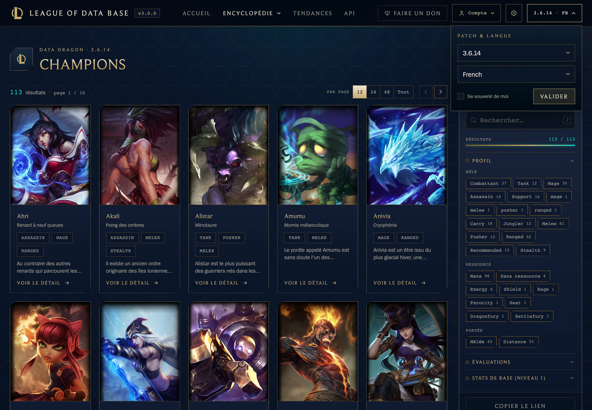
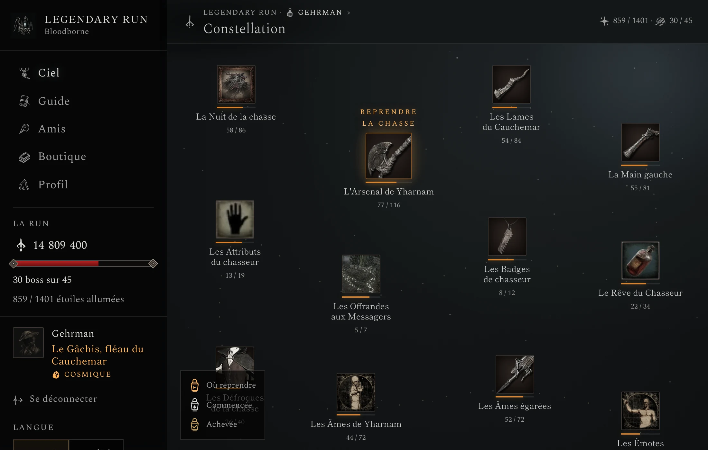
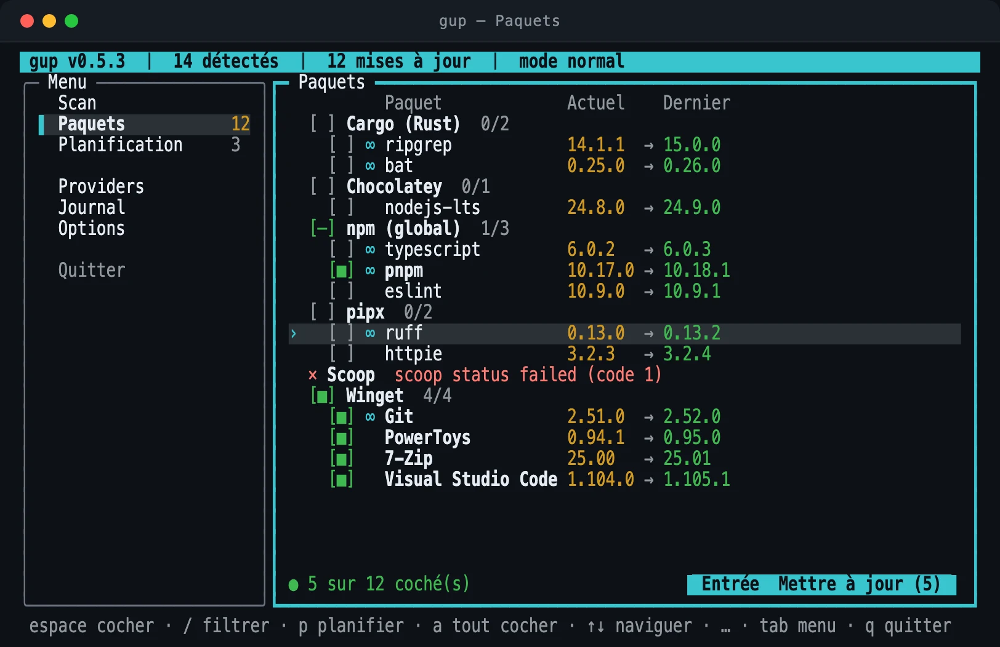

Omnicard
Ce jeu papier est devenu un jeu en ligne, avec son moteur de règles côté serveur.
Un moment j’en ai eu marre, j’ai repris le projet.
Hors ligne, en attente de refonte à confirmer
Architecte logiciel chez B-Hive, à Mulhouse. Lead du pôle francophone de PvZ Fusion et mainteneur de sa traduction multilingue.
Je code depuis mes 13 ans. Sur Gwent, j’ai appris qu’il n’y a pas d’excuse en cas de défaite : juste moi et mes propres décisions. Depuis, j’ai formé des développeurs jusqu’à leur titre et je mène une équipe de bénévoles sur un projet open source.
Vers 10 ans, puis 13 ans
Avec mon père, informaticien, je démonte de vieux PC hors service. Vers 13 ans, j’apprends le C sur OpenClassrooms avec une idée fixe : coder mes propres jeux sur Unreal Engine.
Avec mon cousin, on invente un jeu de cartes sur papier, dont on sort des éditions sans fin. On passe des après-midi entiers à imprimer les cartes et à les plastifier à la main.
Ce jeu papier est devenu un jeu en ligne, avec son moteur de règles côté serveur.
Un moment j’en ai eu marre, j’ai repris le projet.
Hors ligne, en attente de refonte à confirmer
Vers 17 ans
Je découvre Gwent, un jeu de cartes en ligne. Pas d’excuse en cas de défaite pour jeter la faute sur un autre : juste moi et mes propres décisions. Je teste un , puis un deuxième, puis un troisième. Parfois je roule sur la en la prenant à contre-courant, parfois c’est un flop, mais j’apprends de ce flop et je comprends où mon instinct m’a trompé, ce qui l’aiguise.
En un an, j’approche du , puis je plafonne pendant quatre mois. Copier ce que jouent les meilleurs ne suffit plus. Alors je fais l’inverse : je construis un deck à contre-courant, et c’est lui qui me fait entrer dans le classement mondial.
Au sommet, je trouve des joueurs qui jouent ce qu’ils veulent, font preuve de créativité et viennent essayer de nouvelles choses plutôt que seulement gagner.
Depuis, à chaque mise à jour, je passe deux jours à jouer la méta, puis je la réinvente. J’aborde tout ce qui est nouveau de la même façon : d’abord maîtriser ce qui se fait, ensuite le réinventer.
Avant 2025
BUT Informatique, fac de physique-chimie, BUT Réseaux & Télécoms : trois années de filières classiques, une chacune. Puis la piscine de 42, sans admission. Ça n’a pas vraiment marché. Mais je n’ai pas abandonné : j’ai recommencé jusqu’à réussir et je me suis réorienté autant que nécessaire.
2025
Je passe le titre de développeur web et web mobile chez Elan Formation. Je boucle le programme en un mois, je mène des projets en parallèle et je couvre en bonus l’essentiel du niveau supérieur, concepteur développeur d’applications. En stage chez ATIS Solutions, mes modules réduisent de 30 % le temps de traitement administratif.
Fin 2025
Deux mois après mon titre, l’école perd son formateur en fin de promotion. Des étudiants croisés pendant mon cursus donnent mon nom. Je reprends en urgence une dizaine d’apprenants, dont la moitié prépare le titre de concepteur développeur d’applications, un niveau au-dessus du mien. Un début intimidant, puis une expérience très formatrice : tous obtiennent leur titre.
Je suis architecte logiciel chez B-Hive, à Mulhouse, depuis août 2026 : développement web et DevOps. À côté, je construis mes propres outils.

Retrouver les valeurs exactes d’un ancien patch de League of Legends, dans sa langue.
403 patchs depuis 2012, en 21 langues

Ranger tous les objectifs d’une partie complète de Bloodborne, sur le web et sur Android.
1 289 objectifs en 22 constellations

Mettre à jour en une commande tout ce qui est installé sur un poste de développeur.
153 sources sur Windows, macOS et Linux
1 / 3
Depuis l’automne 2025
Je rejoins comme traducteur le pôle francophone de PvZ Fusion, la traduction bénévole d’un jeu amateur. J’accueille les nouveaux, je les forme, j’organise le travail. Quand le titre de lead arrive, je tenais déjà le rôle : la seule chose qui a changé, c’est le titre. Je suis ensuite nommé mainteneur du projet multilingue.
Certains, arrivés sans compétences, sont devenus des piliers de la communauté.
Seul on va vite, à plusieurs on va loin : la qualité et la sincérité des échanges démultiplient les résultats.
ACC-15 reprend PVZ-05
Des mains prennent chacune une carte
Un Trello pour centraliser le travail
ACC-15 reprend PVZ-08
Le podium de la semaine
Un classement chaque semaine, pour encourager chacun à se dépasser
ACC-15 reprend PVZ-08
La lettre nouée d’un ruban
Un récapitulatif individuel, pour féliciter et remercier
ACC-15 reprend PVZ-07
Un colis scellé par semaine
Une pull request par semaine, pour garder le rythme
S’approprier vite ce qui se fait : deux jours pour une méta, un mois pour un programme.
Relire « La voie qui marche »Sortir des sentiers battus : un deck à contre-courant, un jeu papier devenu jeu en ligne.
Relire « Gwent, la méthode »Faire progresser les autres : une promotion reprise en urgence, tous titrés ; 20 contributeurs formés.
Relire « À plusieurs »Une idée à confronter, une équipe à faire grandir, un sujet technique à creuser : la discussion commence ici. à confirmer